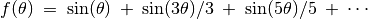

Fourier Analysis¶
Objective
Learn about Fourier Transform of a signal. Time and Frequency domain representations.
Procedure
- Connect SQ1 to A1 and WG to A2. Put A1 in AC coupled mode (slide switch on the box)
- Enable A1 and A2, select 4 volt scale
- Set both WG and SQ1 to 500Hz
- Press the FFT button
Discussion
In the Fourier transform plot, frequency is on the x-axis and the y-axis shows the relative strength of the frequency components of the signal. This is called the frequency domain representation (http://en.wikipedia.org/wiki/Fourier_transform). For the sine wave there is only one dominant peak, the smaller ones are a measure of distortion of the sine wave.
A square wave function can be represented as . In the Fourier transform of a square wave of frequency f , there will be a 3f component (having an amplitude of one third of f ), 5f component (amplitude one fifth) etc. as shown in the figure.